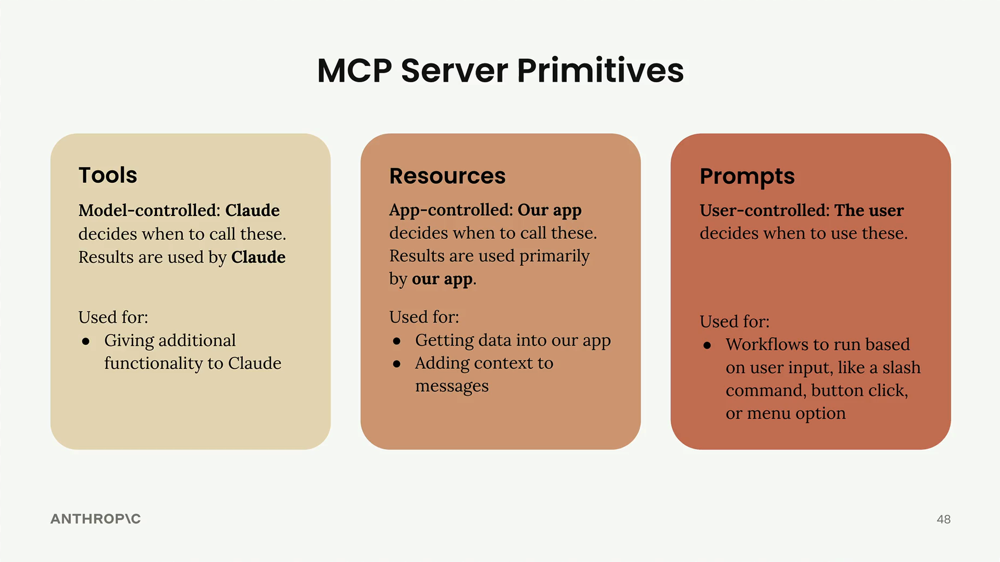

Обзор MCP
Чему научитесь
Видео 4:12 и текст урока
К концу урока вы сможете:
- объяснять, какая часть приложения управляет каждым примитивом сервера: инструментами — модель, ресурсами — приложение, промптами — пользователь;
- выбирать примитив под задачу: новые возможности для Claude, данные для интерфейса и контекста или готовые сценарии для пользователей;
- узнавать все три примитива в интерфейсе Claude.
Видео и текст урока.
Смотреть урок на Skilljar MCP review · 4:12MCP-сервер готов — теперь подведём итог по трём основным примитивам сервера и разберёмся, когда какой из них использовать. Главная мысль: каждым примитивом управляет своя часть стека вашего приложения.

Инструменты: управляет модель (model-controlled)
Инструментами полностью управляет Claude. Модель сама решает, когда вызвать эти функции, и Claude напрямую использует их результаты, чтобы выполнить задачу.
Инструменты идеально подходят, чтобы дать Claude дополнительные возможности, которыми он пользуется самостоятельно. Когда вы просите Claude «вычислить квадратный корень из 3 с помощью JavaScript», именно Claude решает запустить вычисление через инструмент для выполнения JavaScript.
Ресурсы: управляет приложение (app-controlled)
Ресурсами управляет код вашего приложения. Приложение решает, когда получить данные ресурса и как их использовать, — обычно в элементах интерфейса или как контекст для диалога.
В нашем проекте ресурсы использовались двумя способами:
- получение данных, чтобы заполнить список вариантов автодополнения в интерфейсе;
- получение содержимого, чтобы дополнить промпты контекстом.
Вспомните функцию «Add from Google Drive» в интерфейсе Claude: код приложения определяет, какие документы показать, и сам подставляет их содержимое в контекст чата.
Промпты: управляет пользователь (user-controlled)
Промпты запускаются действиями пользователя. Пользователь сам решает, когда запустить такой заранее заданный сценарий, и делает это через интерфейс: нажимает кнопку, выбирает пункт меню или вводит слэш-команду.
Промпты идеально подходят для сценариев, которые пользователь запускает, когда ему нужно. В интерфейсе Claude примеры промптов — кнопки сценариев под полем ввода чата: заранее подготовленные и оптимизированные сценарии, которые пользователь запускает одним нажатием.
Как выбрать примитив
Короткая подсказка для выбора:
- Нужно дать Claude новые возможности? Используйте инструменты.
- Нужно получить данные в приложение — для интерфейса или контекста? Используйте ресурсы.
- Хотите сделать готовые сценарии для пользователей? Используйте промпты.
Все три примитива можно увидеть в деле в официальном интерфейсе Claude. Кнопки сценариев демонстрируют промпты, интеграция с Google Drive — ресурсы, а когда Claude выполняет код или что-то вычисляет, он незаметно для вас пользуется инструментами.
Это общие ориентиры, которые помогают выбрать подходящий примитив под вашу задачу. Каждый примитив служит своей части стека приложения: инструменты — модели, ресурсы — приложению, промпты — пользователям.
Дальше
Курс пройден. В оригинале официальный тест курса — Final Assessment Quiz on MCP (7 вопросов) — стоит перед этим уроком и проходится на Skilljar. Проверить себя можно и нашим пробным экзаменом в двух вариантах: Old · базовый и New · сложный.
Оригинал урока: MCP review.